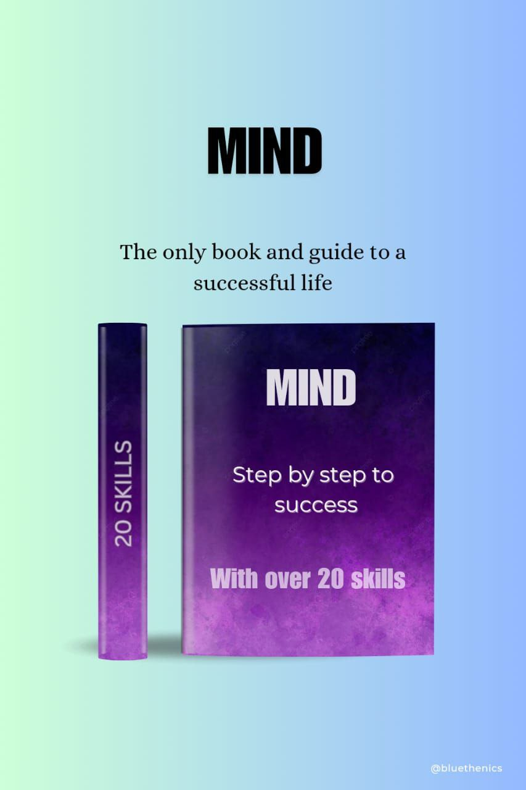

This eBook emphasizes the power of mindset, as it is the driving force behind any success story. It includes numerous accounts of people from different walks of life who overcame obstacles, persevered through challenges, and ultimately achieved greatness. Their experiences serve as valuable lessons, showing how mindset played a pivotal role in turning dreams into reality. By immersing yourself in their stories, you will gain insight into the habits, attitudes, and thought patterns that successful individuals use to excel. Whether you are struggling with setbacks or just need inspiration to move forward, this eBook provides you with practical advice and real-life examples of how a growth mindset can make all the difference. It is important to remember that true success begins from within. Without the willingness to take risks, learn from mistakes, and stay focused, even the best opportunities can go unfulfilled. This eBook helps you develop the confidence, resilience, and perspective needed to turn obstacles into opportunities. Ultimately, this journey of mindset improvement will empower you to set ambitious goals, stay committed, and work towards the life you desire. If you want to make meaningful progress and achieve success, then cultivating a positive and proactive mindset is the most powerful step you can take. Let this eBook be your guide as you transform your thoughts, make better decisions, and shape your future with intention and determination.